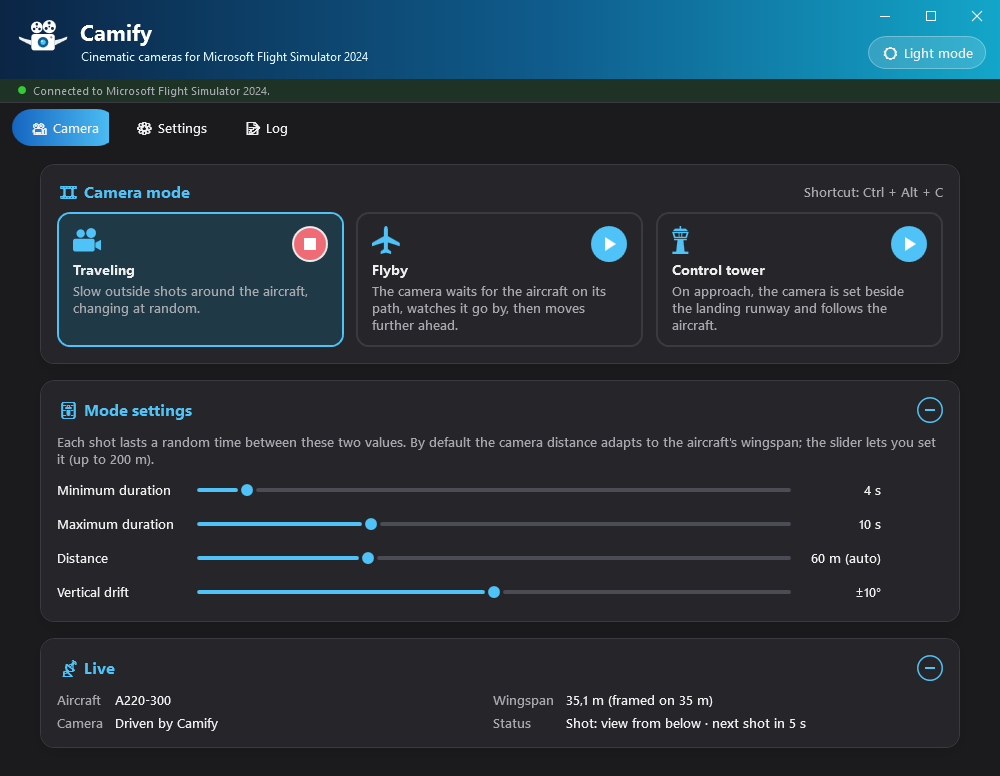
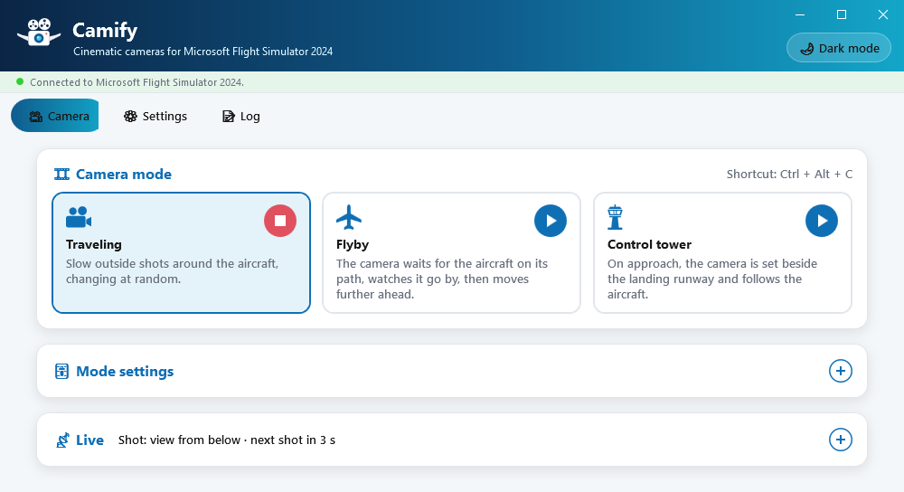
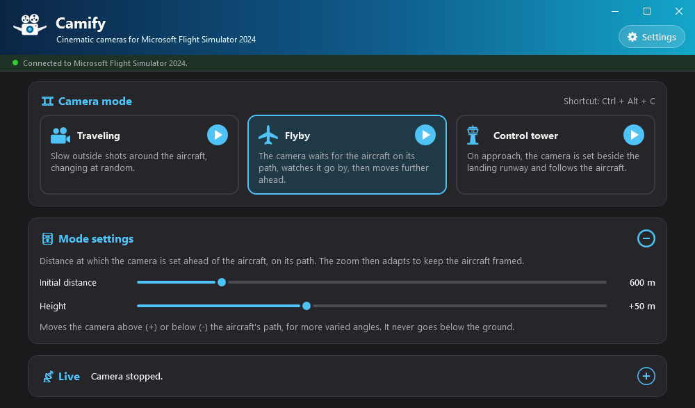
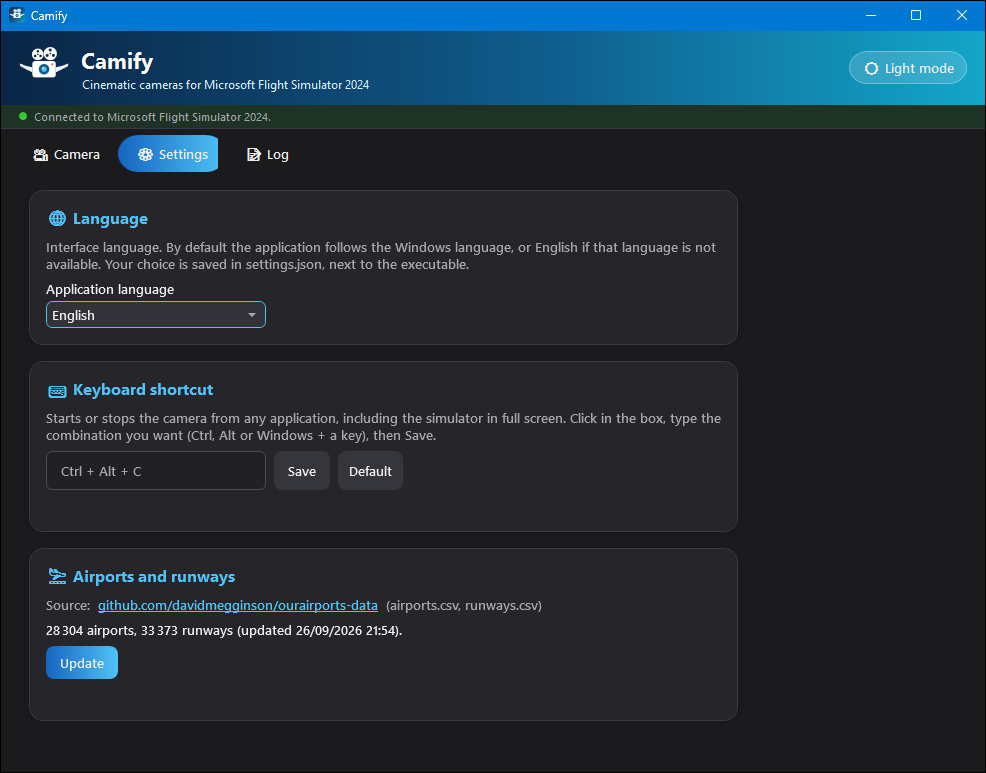
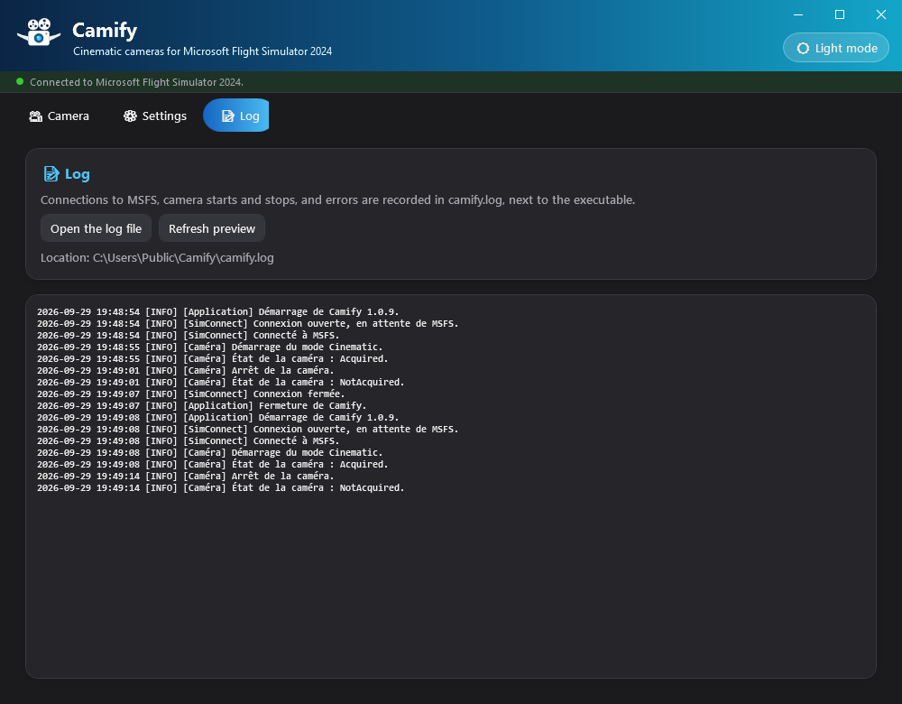

🎥 1. Overview
What Camify does, and who it is for.
Camify is a standalone Windows application that drives the Microsoft Flight Simulator 2024 camera to film your aircraft like a movie, while you fly or while the autopilot flies for you. It uses the SimConnect camera API, the simulator's official interface: there is no mod to install in MSFS.
Three camera modes, each started with a click or a keyboard shortcut:
- Traveling: slow outside shots around the aircraft, picked at random (front three-quarter, side, high angle, views from below and above, chase…);
- Flyby: the camera waits for the aircraft on its path, watches it go by, then moves further ahead;
- Control tower: on approach, the camera is set beside the landing runway and follows your landing.
Camify never flies the aircraft and does not record video: it positions the simulator's camera. To keep a record, use your usual capture tool (for example the Windows Xbox Game Bar, Win + Alt + R).
🚀 2. Installation and first launch
A single file to download, nothing to install.
- Download
Camify.exefrom the releases page: github.com/kairhosen/Camify-releases. - Put it in a folder of your own (for example
Documents\Camify): the application writes its files next to the executable. - Start it, before or after MSFS 2024: it connects by itself.
On the very first start, Camify automatically downloads the airport and runway reference data (OurAirports), needed by the Control tower mode. An Internet connection is only needed at that moment; the data can then be updated on demand from the Settings tab.
camify.db (airports and runways),
camify.log (log),
settings.json (language, selected mode, slider values, shortcut)
and theme.txt (light or dark theme). If you move the executable,
copy them along to keep your settings.
🖥️ 3. General interface
The banner, the connection indicator, the three tabs and the theme.
- A banner at the top that doubles as the title bar: drag it to move the window, double-click it to maximize or restore. The minimize, maximize and close buttons sit at the top right; on Windows 11, hovering over the maximize button opens the Windows snap layouts menu to put the window on half or a quarter of the screen, next to the simulator for instance;
- Below these buttons, 🌙 Dark mode / ☀️ Light mode switches the whole application theme (remembered between sessions);
- A status bar with a coloured dot (red = not connected, green = connected). While MSFS is not available, Camify retries the connection every 5 seconds, with nothing for you to do;
- Three tabs: 🎥 Camera, ⚙️ Settings and 📝 Log.
The application is shown in the Windows language when available (English, French or Spanish), and in English otherwise. You can change it in the Settings tab.
On the Camera and Settings tabs, the window height adjusts by itself to what is displayed (panel expanded or collapsed, selected mode, language): the window stays as compact as possible. You can still resize it by its edges.


🎞️ 4. Camera tab
Choose a mode, adjust it, start it — and follow what the camera does.
Starting and stopping
The tab shows three mode cards: Traveling, Flyby and Control tower.
- Clicking a card selects it and shows its settings in the 🎚️ Mode settings panel, without starting the camera;
- Each card's round ▶ button starts that mode. It turns into ■ while the mode runs: a click stops it and hands the camera back to the simulator;
- Only one mode plays at a time: starting a mode stops the current one;
- The global keyboard shortcut (Ctrl + Alt + C by default), shown to the right of the 🎞️ Camera mode title, stops the running mode or starts the selected one — from MSFS, even in full screen.
Slider changes apply immediately, even while the camera is running, and are kept for the next session.
Traveling mode
Camify chains outside shots picked at random. During each shot the camera glides gently (slight circular tracking, rising or sinking, moving closer or away, zoom), with progressive acceleration and deceleration; moving to the next shot is a cut. Two consecutive shots are never of the same kind.
| Shot | Viewpoint |
|---|---|
| Front three-quarter | Ahead of the aircraft, to the side, slightly above |
| Side | To the side, level with the aircraft |
| Rear three-quarter | Behind, to the side, a little above |
| High angle | Above the aircraft |
| Low angle | To the side, below the aircraft (in flight only) |
| View from below | Almost straight below the aircraft (in flight only) |
| View from above | Almost straight above the aircraft |
| Nose close-up | Very close to the nose |
| Chase | Behind the aircraft, in its wake |
Settings
- Minimum duration and Maximum duration (2 to 30 s, 4 and 10 s by default): each shot lasts a random time between these two values. The two sliders stay consistent (the minimum never exceeds the maximum).
- Distance: average camera distance. By default it follows the aircraft's wingspan (an A380 is filmed from much further away than a C172) and the slider shows “(auto)”. Move it to set a value (5 to 200 m); the Auto button goes back to the automatic value. This manual choice lasts for the session and returns to automatic when you change aircraft.
- Vertical drift (0 to 20°, 10° by default): during each shot the camera rises or sinks by this angle, the direction being picked at random. At 0° the height stays constant during the shot; at 20° the vertical movement is clearly visible.
Flyby mode
The camera is set, fixed, far ahead of the aircraft on its predicted path (track, ground speed and vertical speed), slightly offset to the side. It follows the aircraft with a zoom matched to the distance, watches it go by and fly away, then is set again further ahead: usually on the other side of the path, at a slightly different distance and offset on each pass.
If the aircraft turns back or turns far away from the camera, the camera is set ahead of it again. With the aircraft parked, it stands beside it at eye level.
Settings
- Initial distance (100 to 3,000 m, 600 m by default): distance at which the camera is set ahead of the aircraft, within 10 % to vary the passes. The zoom then adapts to keep the aircraft framed.
- Height (−200 to +500 m, 0 by default): moves the camera above (+) or below (−) the path, for more varied angles. A small random variation is added each time the camera is placed.

Control tower mode
Start this mode at any time, for example at the top of descent. Until the aircraft is on approach, the simulator view is kept. As soon as the aircraft is below 3,000 ft above ground and aligned with a runway, Camify:
- looks for the nearest airport (20 km radius) and the landing runway;
- sets the camera once beside the runway, level with the touchdown zone, at building height (12 m);
- follows the aircraft, zoom included, without ever moving the camera until it stops.
This mode has no settings. It needs the airport and runway data: if it is empty, a red warning appears in the 🎚️ Mode settings panel, below the description.
Live panel
The 📡 Live panel is updated four times per second. Collapsed, it shows the camera status to the right of its title (current shot, distance, runway…); expanded (+ button), it details:
| Line | Content |
|---|---|
| Aircraft | Name of the aircraft loaded in the simulator |
| Wingspan | Wingspan declared by the aircraft, and the size used for framing (bounded when the wingspan is unknown or abnormal, for example for a helicopter) |
| Camera | “Simulator view”, “Driven by Camify”, “Taken by another application” or “Disabled in the simulator options” |
| Status | What the mode is doing: current shot and countdown (Traveling), camera distance (Flyby), airport, runway and distance from the centreline (Tower), or the reason for a stop |
Automatic stops
You always stay in control: Camify stops and hands the camera back to the simulator in the following cases, with the reason shown in the status.
- You change the view in MSFS (view key, joystick, camera menu…): Camify detects it and stops at once;
- the connection to MSFS is lost;
- the camera is already used by another application;
- add-on cameras are disabled in the simulator options;
- an error occurs (details in the Log).
When Camify is closed, the camera is also handed back to the simulator.
⚙️ 5. Settings
Language, keyboard shortcut and airport data.

🌐 Language
English, French or Spanish. By default the application follows the Windows language.
The choice is saved in settings.json.
⌨️ Keyboard shortcut
The shortcut starts or stops the camera from any application, including the simulator in full screen:
- click in the input box;
- type the combination: Ctrl, Alt or Win (optionally with Shift) plus a letter, a digit, an F1–F24 key or a navigation key;
- click Save. Default goes back to Ctrl + Alt + C.
If the combination is already taken by another application, Camify says so and the shortcut reminder shows “(unavailable)”: choose another one.
🛬 Airports and runways
Shows the number of airports and runways in the database and the update date. The
Update button downloads OurAirports'
airports.csv and runways.csv again. Only
large, medium and small airports with at least one usable runway are kept.
📝 6. Log
The technical history, to diagnose a problem.

camify.log.Connections to MSFS, camera starts and stops and errors are recorded in
camify.log, next to the executable. Two buttons:
- Open the log file — opens it in your text viewer, to read it in full or attach it to a bug report;
- Refresh preview — refreshes the preview shown in the application.
Beyond 5 MB, the log is renamed camify.old.log (replacing the
previous one) and a new file starts.
💡 7. Tips & good practice
- With the autopilot, Traveling turns into a real cruise film: lengthen the shots (15 to 30 s) for a more contemplative result.
- For a spectacular flyby, reduce the initial distance (200 to 400 m) and play with the height: slightly below for a pass seen from underneath, well above to see the aircraft with the landscape.
- For the tower, start the mode at the top of descent: it waits for the approach by itself, you just fly.
- To take back control, simply change the view in MSFS or use the keyboard shortcut.
- On a single screen, with the simulator windowed, snap Camify to a corner with the Windows 11 snap layouts and leave its panels collapsed: the camera status stays readable to the right of the 📡 Live title.
- With Flight Logbook, both applications can run during the same flight: one logs the flight, the other films it.
Application files
🛠️ 8. Troubleshooting
“Not connected to MSFS 2024” never turns green
Check that Microsoft Flight Simulator 2024 is running and that a flight is loaded. The Log tab details the connection attempts. Reconnection is automatic every 5 seconds.
“SimConnect.dll is missing or altered”
Camify embeds the SimConnect client and checks its fingerprint before loading it. This
message means a damaged or modified executable: download Camify.exe
again from the official releases page.
The camera is “Disabled in the simulator options”
Cameras driven by add-ons are disabled in the MSFS 2024 options: enable them again in the simulator's camera options, then restart the mode.
The camera stops as soon as I touch the joystick
This is intended if the action changes the view in MSFS (view hat, camera button…): Camify then hands control back. Remove that binding in the simulator controls, or restart the mode with the shortcut.
Control tower mode stays “waiting”
The aircraft must be below 3,000 ft above ground and aligned with a runway of a known airport within 20 km. Check that the reference data is not empty (Settings tab) and update it if the airport is recent.
The keyboard shortcut does nothing
It may already be used by another application: the reminder next to the title then shows “(unavailable)”. Choose another combination in the Settings tab.
⚖️ Appendix — Data sources and licences
The third-party components and data used by the application, and their terms.
| Item | Use in the application | Licence / terms |
|---|---|---|
SimConnect.dll (Microsoft Flight Simulator 2024 SDK 1.7.3) |
Native x64 SimConnect client, embedded unmodified in Camify.exe
to communicate with the simulator |
© Microsoft Corporation, all rights reserved. Provided “as is”, without warranty,
and subject to the Microsoft Flight Simulator SDK license terms, attached to each release
as MSFS-SDK-EULA.pdf. Only used with a legally installed copy of
MSFS 2024. |
| OurAirports (ourairports-data) | Airports and runways (airports.csv, runways.csv)
for the Control tower mode, downloaded on first launch |
Public domain (repository under The Unlicense); provided with no guarantee of accuracy. |
Microsoft Flight Simulator 2024, SimConnect and Windows are trademarks of Microsoft Corporation. Camify is an independent application: it is not affiliated with, endorsed by or supported by Microsoft.